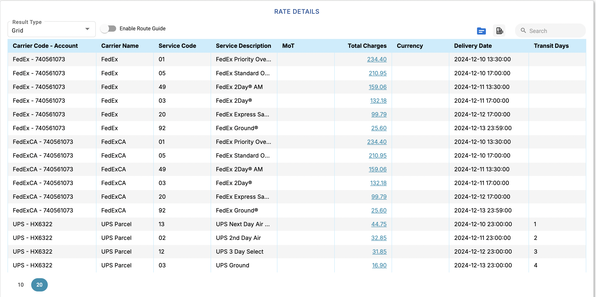

Rate Simulation
Overview of Rate Simulation
The Rate Simulation module in RateCube provides users with an intuitive interface to simulate shipping rates between specified origin and destination locations. By entering shipment details, users can view rate simulations and compare shipping options across various carriers and transport modes. This module is crucial for decision-making, ensuring cost efficiency, and selecting the best carrier for specific logistics needs.
Location Information
The "From" and "To" panels allow users to define the origin and destination locations for the shipment:
- Location Entry Options:
- Use a location code by typing into the "Location" field (e.g., "CAA01" or "EO01").
- Enter Origin and Destination Countries, Cities, Zip Codes, or Regions.
- Optional: Include street-level details in "Address Line 1" for precise simulations.
- Mandatory Fields:
- Origin Country or Zip Code.
- Destination Country or Zip Code.
Adding Shipment Details
The Shipment Details panel captures the specifics of the shipment:
- Required Inputs:
- Shipment Date: Select the date the shipment will be dispatched.
- Expected Delivery Date: Optional field to define the delivery deadline.
- Weight/Dimensions: Specify the weight (in lbs or kgs) and dimensions (length, width, height) of the shipment.
- Number of Pieces:
- Add the quantity of pieces to ship by clicking the "+" Add" button.
- The table below updates dynamically to include all added pieces with weight and dimension fields.
Using Special Services
The Special Services tab allows users to enable or disable additional shipment requirements:
- Hazardous Materials: Check this option if the shipment contains hazardous materials.
- Hold at Location: Use this if the shipment requires holding at the destination location.
- Enable Transport Lanes: Toggle this option for route-specific simulations.
Generating Simulations
Once all the required details are input:
- Click the "Search" button.
- The Rate Details panel at the bottom of the screen displays the simulated results.
Displayed Rate Details:
- Carrier Code and Account.
- Stage Type (e.g., Inbound/Outbound).
- Carrier Name.
- Mode of Transport (MoT).
- Total Charges, Currency, Delivery Date, and Transit Days.
Customizing Results
- Hiding the Search Panel: To maximize space for simulated results, click the "Show Search Panel" toggle.
- Result View Options:
- The "Result Type" dropdown allows users to switch between Grid View (tabular format) or Detailed View (comprehensive breakdown).
- Exporting Results: On the top right corner of the table, you can export the simulation to an EXCEL workbook.
Successful Rate Simulation
When a rate simulation is successful, the Rate Details section populates with comprehensive information about available shipping options. These results help users evaluate and compare carrier rates, transit times, and other critical shipping details to make informed decisions.
The Rate Details Table
The Rate Details Table organizes key data points for simulated shipments, including:
- Carrier Code - Account: Identifies the carrier and account (e.g., FedEx - 740561073).
- Carrier Name: Shows the carrier providing the service (e.g., FedEx, UPS).
- Service Code & Description: Displays the service type and details (e.g., "FedEx Priority Overnight").
- Mode of Transport (MoT): Specifies the shipment method (e.g., Ground, Air).
- Total Charges: Lists the shipment cost, including fees (e.g., $234.40).
- Currency: Denotes the currency used (e.g., USD).
- Delivery Date: Provides the estimated delivery time (e.g., "2024-12-10 17:00:00").
- Transit Days: Indicates the shipment duration in days (e.g., 3 days).
Key Features
- Collapsible Sections: Each carrier (e.g., FedEx, UPS Parcel) is displayed in a separate collapsible row for ease of navigation.
- Enable Route Guide: Activating this option limits the carrier selection to predefined routes set in the system configuration.
- Blue Folder Button: Located on the right of the table. Allows users to view raw request details, providing insights into the data used for simulation for each carrier.
- Results Overview: Shows essential details like carrier names, service descriptions, and charges, while omitting unnecessary details for simplicity.